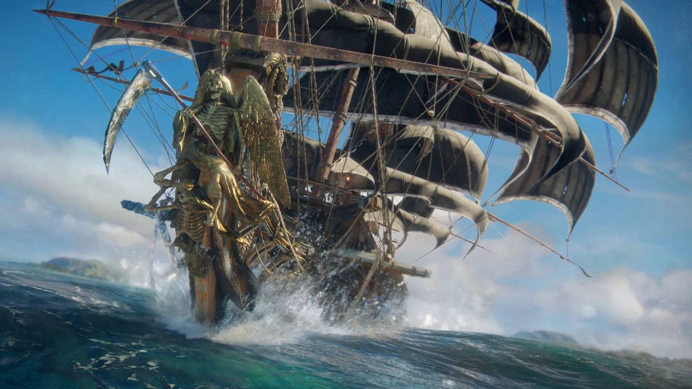
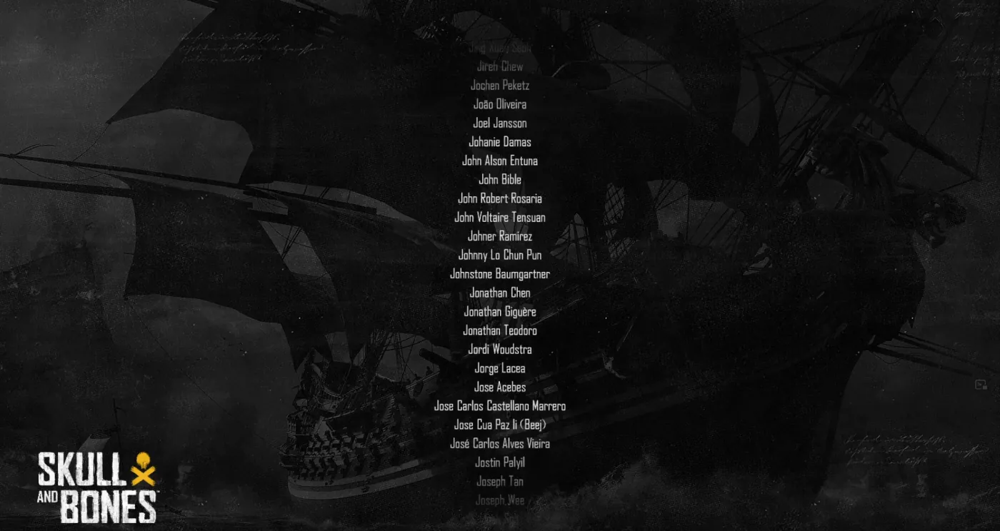

ObjectBank assets
Handling various types of assets mainly in the Ship Building area of the game where we did a bunch of ship parts and cosmetics.

Skull and Bones is very special to me because this is my first project that I was involved in when I started my career in games back in 2017.
Although my time was short at Skull and Bones and I was not able to be on its ship when it sailed to release, I'm forever grateful and honored that this game is the first AAA project I've ever worked on my whole entire career!
Now in 2024, the world will finally be able to enjoy the very first game that made me who I am today.

Handling various types of assets mainly in the Ship Building area of the game where we did a bunch of ship parts and cosmetics.
Developed tools inside 3ds Max using Maxscript to aid artists in checking for errors on their meshes. Was also the author of a reusable mesh part system where artists can share different types of meshes throughout the whole project.
Later on, I moved to engine tools where I wrote a lot of C# and WPF.
I later on went on a mission in Skull and Bones, I was assigned to Assassin's Creed during this time, to port over the tools I made to the new Anvil Engine.
Budget checking in line of the game's budgets for the assets especially the ships cosmetics.
Developed an art asset pipeline together with QA to provide top quality assets to the lead studio that is up until now, is still being utilized.
Understood what the studio needs in terms of technical knowledge when working with the Anvil Game Engine.
Artworks are not mine and credits go to their individual content creators.